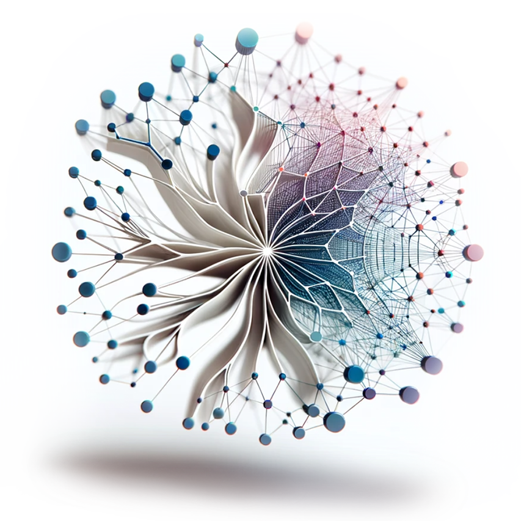

Machine Learning Systems
Principi ed Esercizi di Ingegneria dei Sistemi Artificialmente Intelligenti
Machine Learning Systems offre ai lettori un punto di partenza per comprendere i sistemi di machine learning (ML) basando i concetti sul ML applicato. Poiché le richieste di soluzioni ML efficienti e scalabili aumentano, la capacità di costruire pipeline di ML robuste diventa sempre più cruciale. Questo libro mira a svelare il processo di sviluppo di sistemi ML completi adatti all’implementazione, che abbracciano fasi chiave come la raccolta dati, la progettazione del modello, l’ottimizzazione, l’accelerazione, il rafforzamento della sicurezza e l’integrazione, il tutto da una prospettiva di sistema. Il testo copre un’ampia gamma di concetti rilevanti per l’ingegneria ML generale in tutti i settori e le applicazioni, utilizzando TinyML come strumento pedagogico grazie alla sua accessibilità globale. I lettori apprenderanno i principi di base sulla progettazione di architetture di modelli ML, strategie di formazione basate sull’hardware, ottimizzazione delle inferenze performanti e metodologie di benchmarking. Il libro esplora anche considerazioni cruciali sui sistemi in aree come affidabilità, privacy, IA responsabile e convalida delle soluzioni. Buona lettura!
Prefazione

Benvenuti in Machine Learning Systems. Questo libro è la porta d’accesso al mondo frenetico dei sistemi di intelligenza artificiale. È un’estensione del corso CS249r alla Harvard University.
Abbiamo creato questo libro open source come sforzo collaborativo per riunire spunti di studenti, professionisti e la più ampia comunità di professionisti dell’IA. Il nostro obiettivo è sviluppare una guida completa che esplori le complessità dei sistemi di intelligenza artificiale e le loro numerose applicazioni.
“Se vuoi andare veloce, vai da solo. Se vuoi andare lontano, vai insieme ad altre persone”. – Proverbio africano
Questo non è un libro statico; è un documento vivo e pulsante. Lo stiamo rendendo open source e lo aggiorniamo costantemente per soddisfare le esigenze in continua evoluzione di questo campo dinamico. Contiene un ricco mix di conoscenze specialistiche che guideranno attraverso la complessa interazione tra algoritmi all’avanguardia e i principi fondamentali che li fanno funzionare. Stiamo preparando il terreno per il prossimo grande balzo nell’innovazione dell’IA.
Perché Abbiamo Scritto Questo Libro
Viviamo in un’epoca in cui la tecnologia è in continua evoluzione. La collaborazione aperta e la condivisione delle conoscenze sono gli elementi costitutivi della vera innovazione. Questo è lo spirito alla base di questo lavoro. Andiamo oltre il tradizionale modello di libro di testo per creare un hub di conoscenza vivo, in modo che possiamo tutti condividere e imparare gli uni dagli altri.
Il libro si concentra sui principi e sui casi di studio dei sistemi di IA, con l’obiettivo di fornire una comprensione approfondita che aiuterà a navigare nel panorama in continua evoluzione dei sistemi di IA. Mantenendolo “open source”, non stiamo solo rendendo accessibile l’apprendimento, ma stiamo anche invitando nuove idee e miglioramenti continui. In breve, stiamo costruendo una comunità in cui la conoscenza è libera di crescere e illuminare la strada verso la tecnologia AI globale.
Cosa c’è da Sapere
Per immergersi in questo libro, non si dev’essere un esperto di AI. Tutto ciò di cui c’è bisogno è una conoscenza di base dei concetti di informatica e la curiosità di esplorare su come funzionano i sistemi AI. È qui che avviene l’innovazione e una conoscenza di base della programmazione e delle strutture dati sarà la bussola.
Convenzioni del Libro
Per i dettagli sulle convenzioni utilizzate in questo libro, consultare la sezione Convenzioni.
Dichiarazione di Trasparenza dei Contenuti
Questo libro è un progetto guidato dalla comunità, con contenuti generati da numerosi collaboratori nel tempo. Il processo di creazione dei contenuti potrebbe aver coinvolto vari strumenti di editing, tra cui la tecnologia AI generativa. In qualità di autore principale, editore e curatore, il Prof. Vijay Janapa Reddi mantiene la supervisione umana e la supervisione editoriale per garantire che il contenuto sia accurato e pertinente. Tuttavia, nessuno è perfetto, quindi potrebbero comunque esserci delle inesattezze. Apprezziamo molto i feedback e invitiamo a fornire correzioni e suggerimenti. Questo approccio collaborativo è fondamentale per migliorare e mantenere la qualità del contenuto e rendere le informazioni accessibili a livello globale.
Per dare una mano
Se si è interessati a contribuire, le linee guida si trovano qui.
Contatti
Ci sono domande o feedback? Si è liberi di inviare una e-mail al Prof. Vijay Janapa Reddi direttamente, oppure si può avviare un thread di discussione su GitHub.
Collaboratori
Un grande ringraziamento a tutti coloro che hanno contribuito a rendere questo libro quello che è! L’elenco completo dei singoli collaboratori è qui e ulteriori dettagli sullo stile GitHub qui. Benvenuti come collaboratori!